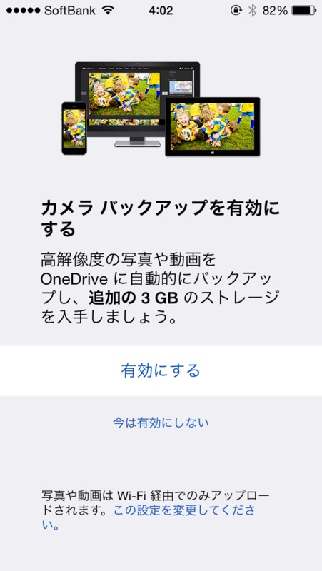
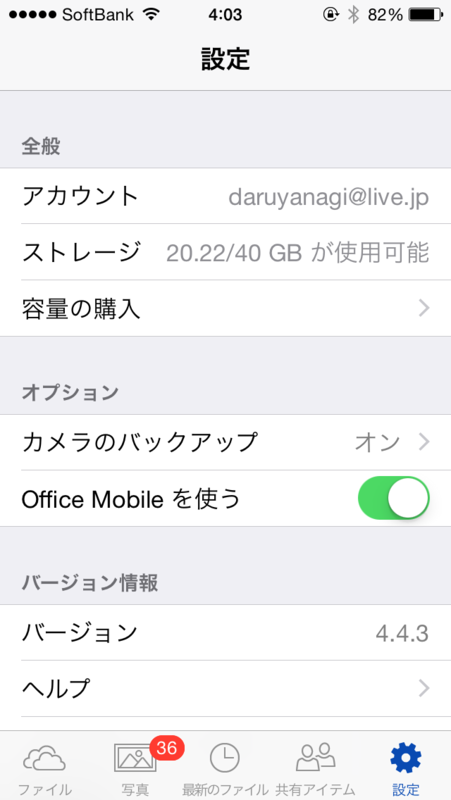

OneDrive の 15GB ボーナスで 25GB → 40GB になったった
公開日：
 
iOS 版の「OneDrive」で“カメラ バックアップ”機能を有効化すると 3GB のボーナスが得られるが、これが9月末までの期間限定で 15GB へ増量されているらしい（iOS 以外のプラットフォームでも“カメラ バックアップ”機能を有効化すれば同様の特典が得られる）。
自分の環境だと、ボーナスの案内画面では 3GB と表示されたが、実際には 15GB 増えている。ウチの OneDrive はもともと 25GB あったので、合計 40GB になった。
The Verge によると、これは空き容量不足で iOS 8 へアップデートできないユーザーに対する救済措置なのだそうだ。
iOS 8 はアップデートに空き容量を 5.7GB 要求する。16GB モデルだと全体の 35％ をフリーにしておかなければならなくなる計算だが、これはかなり厳しい制限だと思う*1。
*1:自分は一度初期化してアップデートした